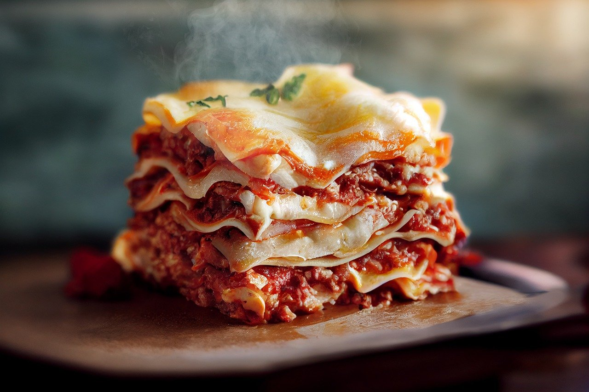

World's Best Lasagna

This classic lasagna recipe combines rich layers of savory meat sauce, creamy ricotta cheese mixture, and gooey melted cheese to create a dish that's perfect for family dinners, special occasions, or simply indulging in comfort food. Follow this step-by-step guide to create a lasagna that will leave everyone asking for seconds!
Ingredients
1 lb sweet Italian sausage
3/4 lb lean ground beef
1/2 cup chopped onion
2 cloves garlic, minced
1 (28 oz) can crushed tomatoes
2 (6 oz) cans tomato paste
2 (6.5 oz) cans tomato sauce
2 tbsp white sugar
Fresh parsley, dried basil, and Italian seasoning for flavor
Cheese Mixture
- 16 oz ricotta cheese
- 1 egg
- Fresh parsley
Additional Ingredients:
- Lasagna noodles (prepared)
- Mozzarella cheese (shredded)
- Parmesan cheese (grated)
Step by Step
- In a large skillet, cook the sausage, ground beef, onion, and garlic over medium heat until well browned. Drain excess fat.
- Add crushed tomatoes, tomato paste, tomato sauce, and sugar to the skillet. Stir in parsley, basil, and Italian seasoning. Simmer uncovered for 30 minutes, stirring occasionally.
- In a mixing bowl, combine ricotta cheese, egg, and parsley. Mix well and set aside.
- Preheat your oven to 375°F (190°C). Grease a 9x13 inch baking dish.
- Spread 1 1/2 cups of the meat sauce in the bottom of the prepared baking dish. Arrange a layer of noodles over the sauce.
- Spread half of the ricotta cheese mixture over the noodles. Top with a third of the shredded mozzarella cheese and sprinkle with grated Parmesan.
- Repeat layers (meat sauce, noodles, ricotta mixture, mozzarella, Parmesan). Finish with a final layer of meat sauce and the remaining mozzarella and Parmesan cheese.
- Cover with aluminum foil (to prevent sticking, spray the foil with cooking spray first) and bake in the preheated oven for 25 minutes.
- Remove the foil and bake an additional 25 minutes. Let the lasagna cool for 15 minutes before serving.
Check out other recipes